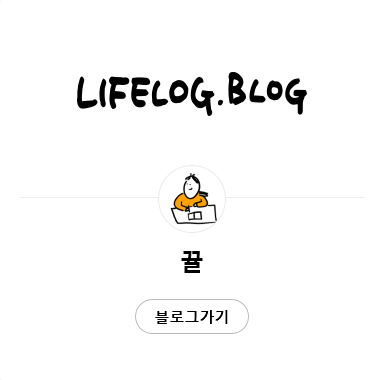

기록이 쌓이면 내가 된다
라이프로그.블로그
라이프로그.블로그 캠페인은 다른사람의 시선으로부터
자유로워져 진솔한 '나'를 기록하는 방식은 제안합니다.
사진 몇 장, 글 한 줄로 남기엔 아쉬운 당신의 삶을 블로그에 기록해보세요!
기록이 쌓이면 스토리가 된다.
관심사도 많고 하고 싶은 것도 많은 힙스터 대학생 은지 (20).
SNS에 다 담지 못하는 그녀의 일상을 블로그에 기록.
기록이 쌓이면 브랜드가 된다.
스타일이 남다른 20대 사회 초년생 제니(26)의 이중생활!
낮에는 평범한 회사원이지만 퇴근 후 시작되는 제니의 패션life.
기록이 쌓이면 이력이 된다.
마케터로서 커리어를 쌓아 가고 있는 동현(29)
프로젝트들을 블로그에 기록하다 보니 퍼스널 브랜딩이 되다.
기록이 쌓이면 덕력이 된다.
학업 스트레스를 아이돌 덕질로 해소하는 고등학생 서연(17)
더욱 열심히 덕질할 방법을 찾았다.

블로거의 손글씨로 더 특별해진
캠페인 스페셜 로고
라이프로그.블로그 캠페인의 스페셜 로고는 블로거들의 손글씨 콜라보로 완성되었는데요.
다양한 블로거의 개성과 목소리를 담고자 했습니다.
블로그 곳곳에서 선보이는 손글씨 스페셜 로고 제작에는
Adrian(서호성), HWL(이혜원), 캘리애(배정애), 뀰(김규림)님께서 참여해주셨습니다.
앞으로 더 많이 관심 갖고 애정해주세요!
